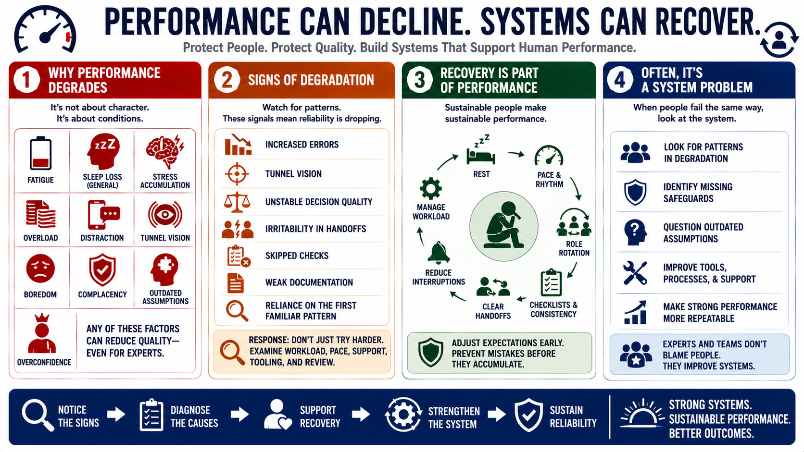

Performance Degradation and Recovery
Connecting to LMS... Progress: in progress

Narration
Performance can degrade for reasons that have nothing to do with character. Fatigue, overload, sleep loss at a general level, distraction, stress accumulation, boredom, complacency, outdated assumptions, and overconfidence can all reduce quality. A strong performer may still make poor decisions when the system around the work creates too much strain or hides important feedback.
Common signs of degradation include increased errors, tunnel vision, unstable decision quality, irritability in handoffs, skipped checks, weak documentation, and reliance on the first familiar pattern. These signals matter because they show the performance system is losing reliability. The response should not be only try harder. It should include examining workload, pace, support, tooling, and review.
Recovery is part of performance. Rest, pacing, workload management, and sustainable improvement are not luxuries reserved for quiet periods. They are how people preserve judgment over time. In high-demand environments, recovery may also mean rotating roles, creating clearer handoffs, using checklists more consistently, reducing interruptions, or adjusting expectations before mistakes accumulate.
Performance problems are often system problems. If people repeatedly fail in the same way, the system may be asking for more than human attention can reliably provide. Expert performers and strong teams look for patterns in degradation. They ask which safeguards are missing, which assumptions are outdated, and what support would make strong performance more repeatable.